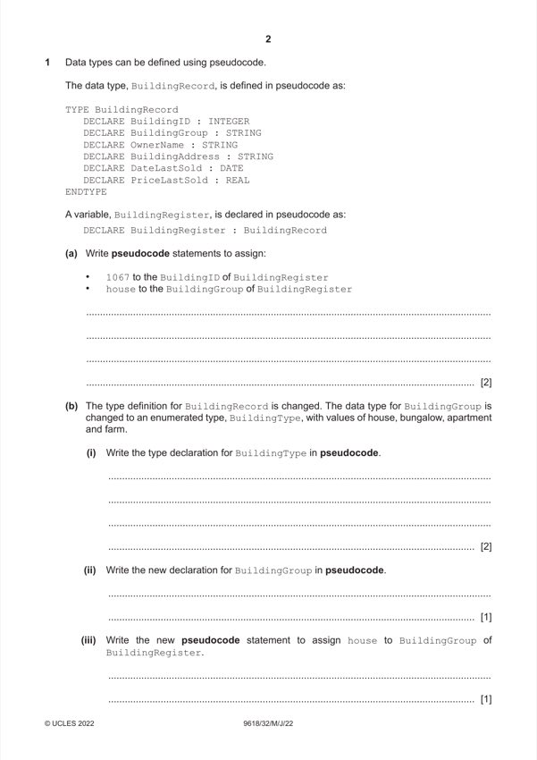

Question 1

Original paper page 2
Part 1(a) — solution
BuildingRegister.BuildingID 1067 2
BuildingRegister.BuildingGroup "house"
Mark points
- Include the ideas shown in the solution above.
Part 1(b)(i) — solution
- One mark: TYPE BuildingType = 2
- TYPE BuildingType = (house, bungalow, apartment, farm)
Mark points
- One mark: TYPE BuildingType = 2
- TYPE BuildingType = (house, bungalow, apartment, farm)
Part 1(b)(ii) — solution
DECLARE BuildingGroup : BuildingType 1
Mark points
- Include the ideas shown in the solution above.
Part 1(b)(iii) — solution
BuildingRegister.BuildingGroup house 1
Mark points
- Include the ideas shown in the solution above.
Part 1(c)(i) — solution
PRIVATE OwnerName : STRING 1
Mark points
- Include the ideas shown in the solution above.
Part 1(c)(ii) — solution
To ensure that attributes can only be accessed by the class’s own methods 2
To enforce encapsulation // ensure they are hidden
Mark points
- Include the ideas shown in the solution above.